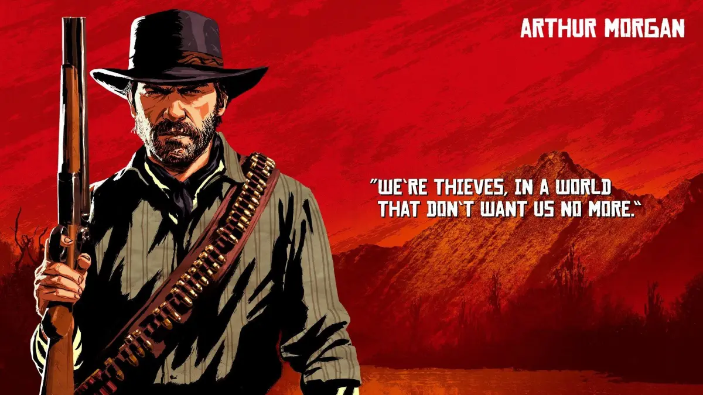

Bem-vindo a Red Dead Redemption 2

Red Dead Redemption 2 se passa no final do século XIX, em 1899, durante o declínio do Velho Oeste nos Estados Unidos. O jogo acompanha a história da gangue Van der Linde, um grupo de fora da lei liderado por Dutch Van der Linde, enquanto enfrentam a crescente pressão das autoridades e da modernização. Os tempos de crime e liberdade estão chegando ao fim, e a gangue precisa lidar com as mudanças da sociedade, ao mesmo tempo em que tenta sobreviver em um mundo em transformação. O protagonista do jogo é Arthur Morgan, um dos membros mais antigos e leais da gangue. Ele é um pistoleiro experiente e um ladrão habilidoso, que mantém um forte senso de lealdade à gangue. Ao longo da história, Arthur enfrenta conflitos morais, questionando seu papel na gangue e suas ações. A relação dele com outros membros, especialmente com Dutch, passa por altos e baixos, à medida que a gangue se desintegra devido às tensões internas e externas. Conforme o jogo avança, a gangue Van der Linde começa a enfrentar desafios que ameaçam sua sobrevivência. As autoridades, como a Agência Pinkerton, estão cada vez mais determinadas a capturá-los. A liderança de Dutch se torna instável, e as promessas de um último grande golpe para garantir a liberdade começam a soar falsas. As desconfianças entre os membros da gangue aumentam, especialmente com a chegada de figuras como Micah Bell, que influencia Dutch de forma negativa. Arthur passa por uma jornada de autodescoberta ao longo da história. Depois de ser diagnosticado com tuberculose, ele começa a refletir sobre sua vida e as consequências de suas ações. O jogo permite que os jogadores tomem decisões morais que afetam o destino de Arthur e sua visão do mundo, tornando-o um personagem mais introspectivo. Ele também tenta ajudar pessoas inocentes e se redimir de seus pecados enquanto lida com sua condição terminal. A gangue de Dutch eventualmente se desintegra devido a traições e conflitos internos. Micah Bell desempenha um papel fundamental ao trair a gangue e colaborar com as autoridades. Dutch, antes um líder carismático, se torna paranoico e obcecado com seus planos impossíveis, ignorando o bem-estar de seus companheiros. Arthur, percebendo a verdadeira natureza de Micah, se volta contra ele e tenta salvar o que resta da gangue, especialmente John Marston, que se tornará o protagonista de Red Dead Redemption. O jogo culmina em um confronto entre Arthur, Micah e Dutch, levando a diferentes finais dependendo das escolhas do jogador. Independentemente das decisões, o destino de Arthur é selado devido à sua doença, mas ele busca encontrar paz nos momentos finais de sua vida. Após os eventos principais, o epílogo foca em John Marston, que tenta construir uma vida nova com sua família. Red Dead Redemption 2 termina conectando-se diretamente com os eventos do primeiro jogo, estabelecendo o ciclo de redenção e tragédia que define a série.